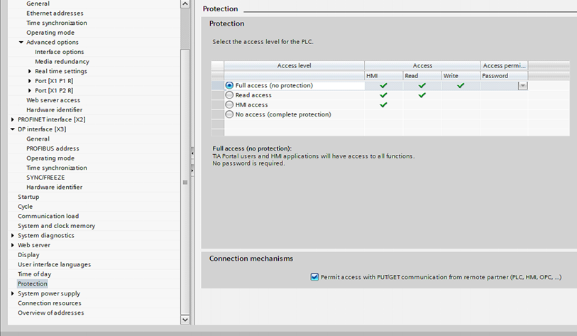
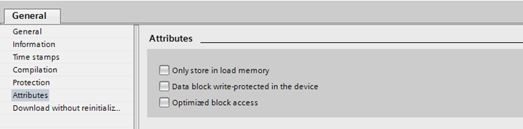
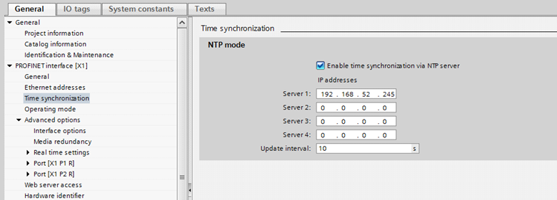

Simatic S7 Troubleshooting
This section contains Simatic S7 troubleshooting information.
Simatic S7 Performance Guidelines
In some cases, the system response time for errors or operator action is too long. This may be due to Simatic S7 settings or a slow response of the CPU.
The issue can be resolved in the following ways:
- Turn off the cycle time limitation of 100 milliseconds in PLC. (Engineering in Siclimat X).
- Check if it is possible to change the priority of the CPU to B&B.
- If neither of these steps help, you need to replace your CPU with a high-speed CPU.

S7-1200/1500 Compatibility Mode Settings
The optimized block access for the automation station address area is not supported by the Standard S7 driver provided from the management station. The automation station has to be configured in compatibility mode for classic S7 block communication. This appendix describes the required configuration settings.
- In PLC Device configuration settings of a CPU, in Connection mechanisms select the Permit access with PUT/GET communication from remote partner check box.
- During program engineering, data blocks have to be configured in addition and connected to the application for read and write access.
- In the data block settings of the CPU’s program block, in Attributes, clear the Optimized block access check box.
- Ensure time synchronization, by using an NTP server of the customer's IT environment. Select the Enable time synchronization via NTP server check box and configure the IP address in the device configuration settings.
- Since the task of time synchronization is done by the NTP service, Time Sync Mode for the S7 device must be set to Ignore in the management station
- The slot is obtained from the device configuration, typically Slot = 1.


